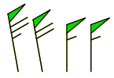

This command controls the appearance of the pennant flags on wind barbs. It is available starting with GrADS version 2.1.1b0.
set barbopts opts
outline do not fill
in
the pennant filled fill in the pennant
If you are using a transparent color to draw filled barbs, you may notice a faint outline around the pennant flags; you can avoid this using color masking.
Results that look like the image below may be accomplished by drawing filled barbs underneath outlined barbs.
